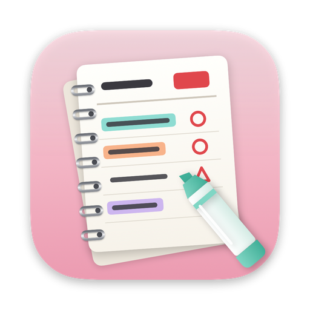

SpiraldaymacOS Planner
창 하나가
종이 한 장.
10분 단위 종이 플래너처럼 쓰는 Mac 플래너예요. 형광펜으로 하루를 칠하고, 펜으로 ○△× 체크하고, 다 쓰면 스프링 노트처럼 한 장 넘겨요.

Daily
익숙한 칸들이 한 장에.
DATE · D-DAY · COMMENT · TOTAL TIME · TASKS 15줄 · MEMO · 06시부터 다음 날 05시까지의 10분 타임테이블. 종이 플래너에서 익숙한 칸들이 하루 한 장에 다 들어 있어요.
- ○체크 박스를 누를 때마다 완료 → 일부 → 못함 → 미룸
- △끝낸 일에만 형광펜이 그어지고, 같은 형광펜끼리 모여요
- ×길게 쓰면 아래 칸으로 이어서, 칸이 모자라면 글씨가 조금씩 작아져요
- →날마다 고르는 컬러 컨셉 — TOTAL TIME, 요일, D-day 색이 함께 바뀌어요

Page turn
진짜 종이처럼 넘어가요.
종이 모서리를 잡고 끌면 손가락을 따라 말려 올라가고, 놓으면 스프링 쪽으로 넘어가요. 트랙패드 두 손가락 스와이프, ← → 키도 돼요. 종이 뒷면에 앞면 잉크가 살짝 비치는 것까지 Metal 로 그렸어요.
스프링 링은 창 밖으로 튀어나와 있어요 — 정말 노트처럼.

Timetable
형광펜으로 하루를 칠하세요.
오른쪽 팔레트에서 형광펜을 고르고 10분 칸을 드래그하면 끝. 칠한 시간이 TOTAL TIME 과 형광펜별 시간으로 바로 계산돼요. 타임테이블 위에 손글씨 메모를 쓰고, 🍴 밥시간은 화살표로 이어요.
형광펜 이름·색·순서는 마음대로 바꿀 수 있고, 최대 12개까지 만들 수 있어요.

Weekly
한 주는 가로로 한 장.
MY GOAL 과 주간 회고, 월–일 7칸에 할 일 10줄과 타임테이블. 주간으로 바꾸면 창이 가로 비율로 부드럽게 변하고, 스프링은 위로 올라가요.

Home
쌓인 하루들을 한눈에.
이번 주·이번 달 시간, 하루 평균, 연속 기록, 할 일 완료율, 최근 12주, 형광펜별 시간, 가장 자주 칠한 시간대와 요일, 최근 35일 달력까지. 날짜를 누르면 그날로 바로 가요.

Planners
플래너는 책처럼, 여러 권.
권마다 이름, 시작일, 종료일, 표지 색을 정해요. 시작일보다 앞으로는 넘어가지 않고, 종료일을 정하면 그날에서 멈춰요. 업무용 한 권, 공부용 한 권 — 기록과 형광펜이 권마다 따로 저장돼요.

A4 반쪽으로 뽑으면 실물 크기.
일간은 A4 가로 한 장에 이틀씩 — 가운데 선을 따라 자르면 손에 드는 종이 플래너 크기예요. A4 세로로 하루 한 장, 주간과 홈은 A4 가로. 기간을 정해 한 번에 뽑고, 벡터라 인쇄가 선명해요.
기록이 없는 날은 빈 양식 — 종이로도 쓸 수 있어요.

And more
튜토리얼로 시작
처음 열면 플래너 만들기부터 사용법까지 차근차근 안내해요.
D-day 두 개
런칭까지, 시험까지 — 일간 위쪽에 남은 날을 세어 적어 줘요.
키보드로 다
← → 넘기기, T 오늘, W · D · H 보기, 1–7 형광펜, E 지우개.
9가지 컬러 컨셉
날마다 다른 강조색. 기본 컬러는 설정에서.
손글씨 폰트
또박또박 볼펜 느낌의 Poor Story 로 적혀요.
자동 업데이트
새 버전이 나오면 앱이 알려 주고, 누르면 알아서 바꿔 끼워요.
Install
설치는 1분이면 돼요.
내려받기
Spiralday.dmg 를 받아 열어요.
끌어다 놓기
열린 창에서 Spiralday 를 Applications 폴더로 끌어다 놓아요.
열기
응용 프로그램 폴더나 Launchpad 에서 열면 끝. Apple 공증을 받은 앱이라 바로 열려요.
Privacy
기록은 내 Mac 에만.
Spiralday 에는 계정도, 광고도 없어요. 쓰는 즉시 내 Mac 의 파일로 저장돼요.
- 인터넷은 두 가지에만 — 하루 한 번 업데이트 확인, 그리고 설정에서 끌 수 있는 익명 사용 통계. 나머지는 인터넷 없이 다 돼요 (개인정보 처리방침)
- 파일로 저장 —
~/Library/Application Support/Spiralday - 오픈소스 — 코드는 GitHub 에 공개돼 있어요 (MIT)
오늘 한 장, 넘겨 볼까요?
무료 · macOS 14 이상 · Apple Silicon & Intel